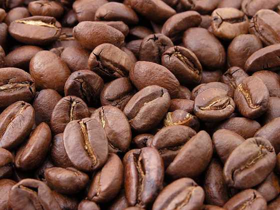
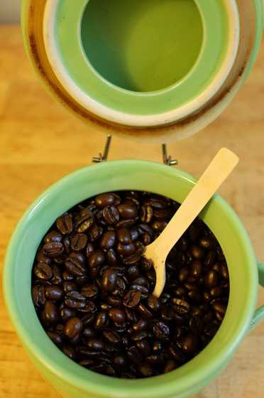
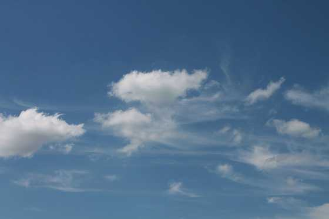

ABOUT
CAFE SAIROは、豊橋市南牛川の通り沿いにある小さなカフェです。カウンター席と奥の座敷があり、レトロな雰囲気の中で珈琲をいただけます。
食べログの口コミ投稿者によると、この場所にはおよそ50年前まで「coffee room サイロ」という喫茶店があり、当時の経営者のお孫さんが家族の協力を得て、2024年2月にお店を再開したとのことです。店内には当時のメニューや壁掛けの電話が残っている、という声もあります。ただし、お店からの公式な発表は確認できておらず、口コミ投稿者の情報にもとづく内容です。
店名の意味は確認できていません。





MENU
珈琲を中心に、ラテやデザートなどがあると紹介されています(口コミ・ブログより)。内容は変わることがあります。営業時間・価格などの詳細は準備中です。
珈琲、カフェラテ、抹茶系のラテなど。
昔ながらのプリンやサンデーなどの紹介があります。
準備中



VOICE
レトロな店内で、ゆっくり珈琲を飲めました。座敷の席が落ち着きます。
昔ながらのプリンがやさしい味でした。また立ち寄りたいです。
通り沿いなので、散歩のついでに入りやすいお店です。